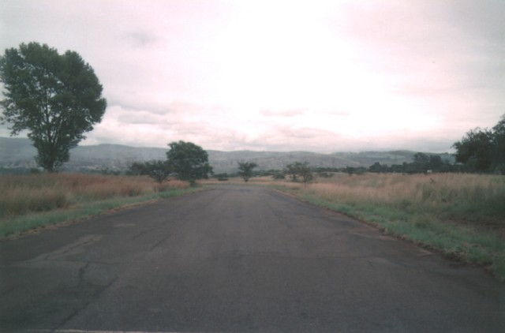
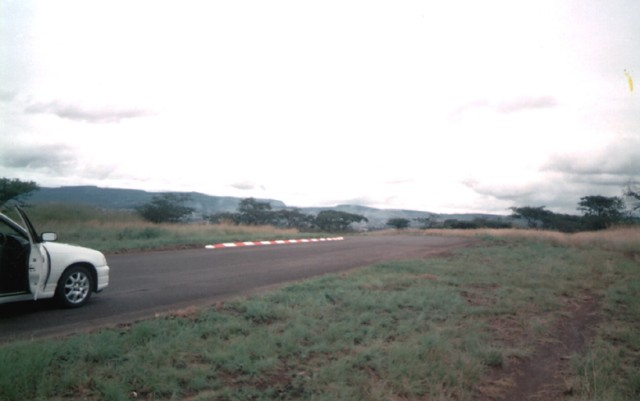
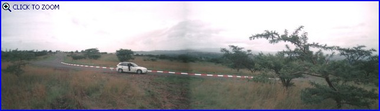
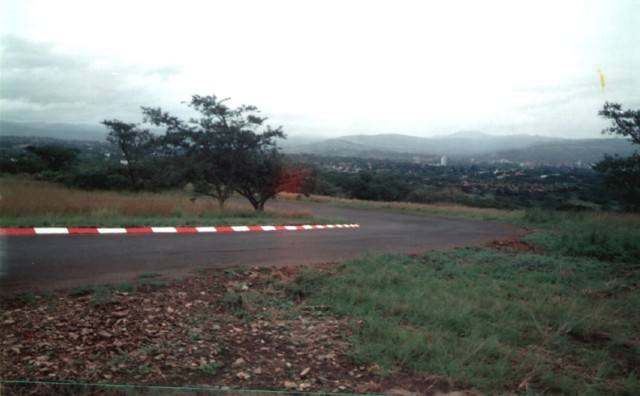

Return to racingcircuits.net's Photo Archive Main Index
Roy Hesketh Circuit, Pietermaritzburg - Quarry
|| Contents | Quarry | BP and Beacon || Home ||
Click on the hyperlinks above to view photographs of that
section.
The numbers and arrows on the map represent the location of where each of the
photographs were taken.
Return to racingcircuits.net's Photo
Archive Main Index

01 - Quarry corner just ahead.

02 - Quarry entry.

03 - Quarry.

04 - Quarry exit.
Photographs ©Paul Minnaar. Reproduced here with kind permission